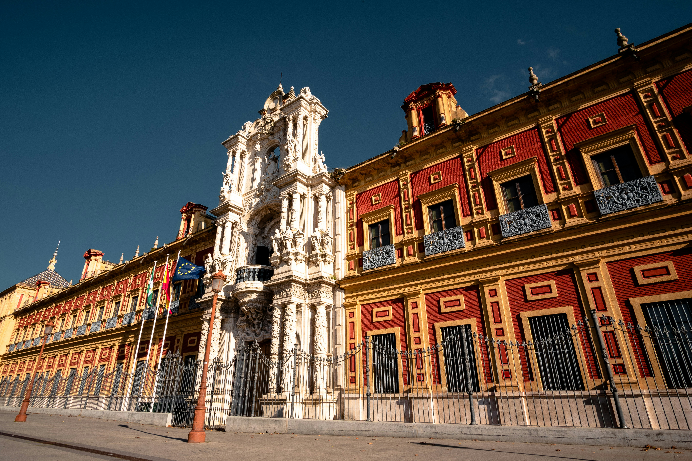

Three thousand years of history, one extraordinary walk. Go at your own pace.
Three thousand years of history, the world's largest Gothic cathedral, a palace built by a Christian king in the Moorish style, and a square that doubled as a galaxy far, far away. Not bad for an afternoon.
Get all 11 stops with narrated audio and live GPS. A code will be sent to you after purchase to unlock the full tour.
Unlock Full Tour - €4.99Payments powered by Lemon Squeezy & Stripe